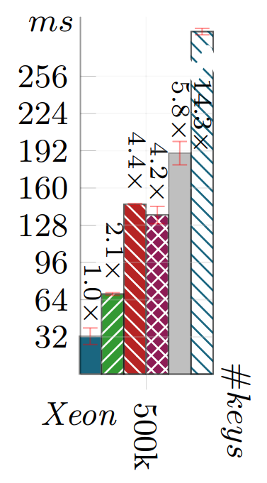
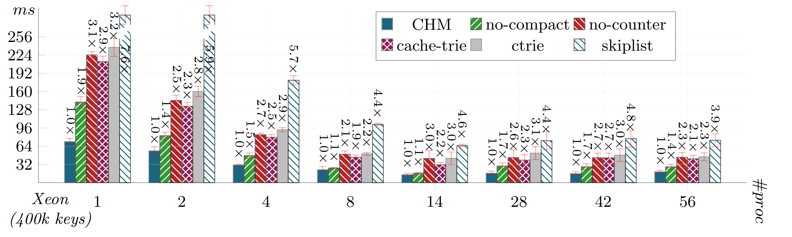
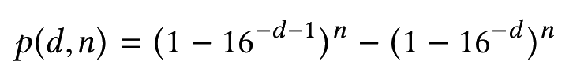

Efficient Lock-Free Removing and Compaction for the Cache-Trie Data Structure
Roadmap
- Recap of cache-tries
- Lock-free remove operation
- Lock-free compaction
- Performance evaluation
- Conclusion
Hash tries


Cache-tries
Question
How to keep the cache and the trie consistent?
Rule: first update the trie, and then update the cache.
If a thread does not see a key in the cache, it can still find it in the trie.
Observation
Lookup and insert run in O(1) time.
Question
How to implement a remove operation that runs in O(1) time?
Solution
Freeze before removing nodes.
Rule
No operation can mutate a frozen memory location in the node.
Remove algorithm
- 1. Locate node N with key via cache.
- 2. Otherwise, locate N with the trie.
- 3. CAS to remove the key.
- 4. Traverse node to check if empty.
- 5. If not empty, done.
- 6. Freeze the node's subtree.
- 7. Announce compaction with X-node.
- 8. CAS a new compacted node.
Counter optimization
4. Traverse node to check if empty.
To avoid traversing the node after every remove, we add an eventually consistent counter to each node.
Counter optimization
...
4. Decrease counter.
5. If counter is 0, traverse node to check if empty.
...
As more and more elements are removed, more and more levels are unnecessarily traversed.
Cache adjustment
1. If key not in cache, increase counter.
2. If counter large, sample depths.
3. Adjust the trie accordingly.
This ensures an O(1) running time.
Evaluation

Evaluation
Thank you!
Questions?
Non-blocking hash-tries

Prokopec et al., Lock-Free Resizable Concurrent Tries, LCPC 2011
History
- Implemented in at least 7 languages.
- Prokopec et al., Concurrent tries with efficient non-blocking snapshots
- Areias and Rocha, A Lock-Free Hash Trie Design for Concurrent Tabled Logic Programs
- Oshman and Shavit, The SkipTrie: Low-Depth Concurrent Search without Rebalancing
Proposed data structure
New hash-trie design with fewer indirections (i.e. fewer cache misses).
Problem statement
How to make basic operations asymptotically faster?
Main idea:
Path caching
Research questions
How to keep the cache consistent?
How to keep the cache consistent?
What is optimal cache depth?
How to keep the cache consistent?
What is optimal cache depth?
Does asymptotic complexity change?
Invariant
A node that is not frozen is reachable.
Invariant
A frozen node may be unreachable.
Policy
If an operation observes a frozen node, then it executes the slow path.
Operations are non-blocking and linearizable.
Details and proof in the paper.
Problem 2
Cache depth
Solution
Periodically sample the trie,
and adjust the cache depth.
Problem 3
Optimality
Are cache-tries O(1)?
Goal
Show that a typical key is O(1) steps away from the cache.

Goal
Show that a typical key is O(1) steps away from the cache.
Subgoal 1
Expected key depth is at log16 n.
Key depth distribution
Key depth distribution
Key depth expectation
Subgoal 2
There always exists a pair of consecutive depths with "many" keys.
Expected percentage of elements in the most populated pair of depths
Subgoal 3
Such a depth is at log16 n.
Key depth expectation
Expected cache depth
Key depth expectation
Expected cache depth
Cache-tries run in expected O(1).
Tech report: Analysis of Concurrent Lock-Free Hash Tries with Constant-Time Operations
Evaluation
Memory footprint

Lookup performance
Insert performance

Summary
- A novel non-blocking hash-trie design
- Lock-free path caching algorithm
- Proof for expected O(1) running time
- Compared to CHM, ~2x faster insertion, ~1.5x-2x slower lookup
- Compared to previous non-blocking tries, up to 5x faster